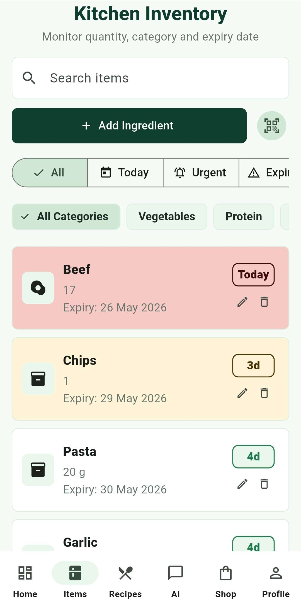

Add your ingredients
Record what you have by adding items manually or scanning product barcodes.
EcoBite helps you stop guessing what to eat by turning your kitchen inventory into recipe ideas, expiry reminders and smarter grocery plans.
Based on your kitchen inventory
App Features

How EcoBite Works
Record what you have by adding items manually or scanning product barcodes.
EcoBite recommends meals based on available ingredients and food that should be used first.
Missing ingredients and staples become a focused grocery plan.
Benefits
Recipe ideas come from your actual inventory instead of random searches.
Priority reminders help users cook older food before it spoils.
Shopping suggestions focus on missing items instead of food already at home.
Beginner-friendly support makes cooking and planning feel more manageable.
Start using EcoBite today and turn everyday food decisions into smarter, lower-waste habits.
FAQ
Students, families, beginner cooks and anyone who wants help deciding what to cook from food they already own.
No. It connects expiry tracking with recipe suggestions, grocery planning, AI assistance, barcode scanning and personal preferences.
EcoBite encourages users to cook older ingredients first, avoid duplicate purchases and plan meals around food that might otherwise be forgotten.
EcoBite reduces waste by making food items easier to track, showing expiry reminders, suggesting recipes from available ingredients and helping users shop only for what they need.
Yes. EcoBite compares recipes with the items in the kitchen inventory, then prioritizes meals that use ingredients the user already has.
Yes. The barcode scanner helps users add items more quickly, making it easier to keep the inventory updated without typing every product manually.
Yes. EcoBite is designed to guide users who are unsure what to cook by turning available ingredients into clearer recipe and grocery suggestions.
The grocery plan focuses on missing recipe ingredients and useful staples, helping users avoid buying duplicate items already available at home.
Yes. Users can set dietary preferences, cooking style, household size, reminder settings and dark mode so recommendations feel more relevant.
No. EcoBite supports daily decisions by organizing information and giving suggestions, while users still choose what to cook, buy and keep.
EcoBite starts from the user's own kitchen inventory instead of only showing random recipes, so its suggestions are linked to food the user already has.
Yes. EcoBite supports responsible consumption by helping households reduce unnecessary food waste and make better use of purchased ingredients.